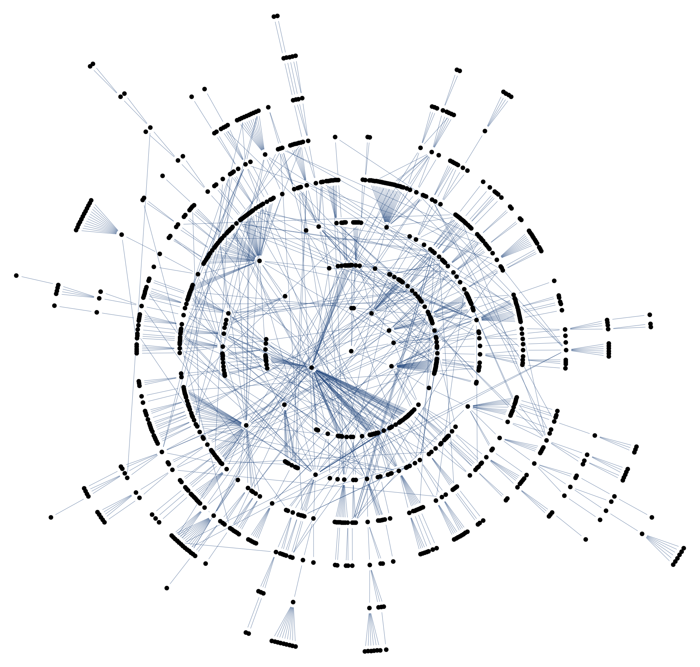
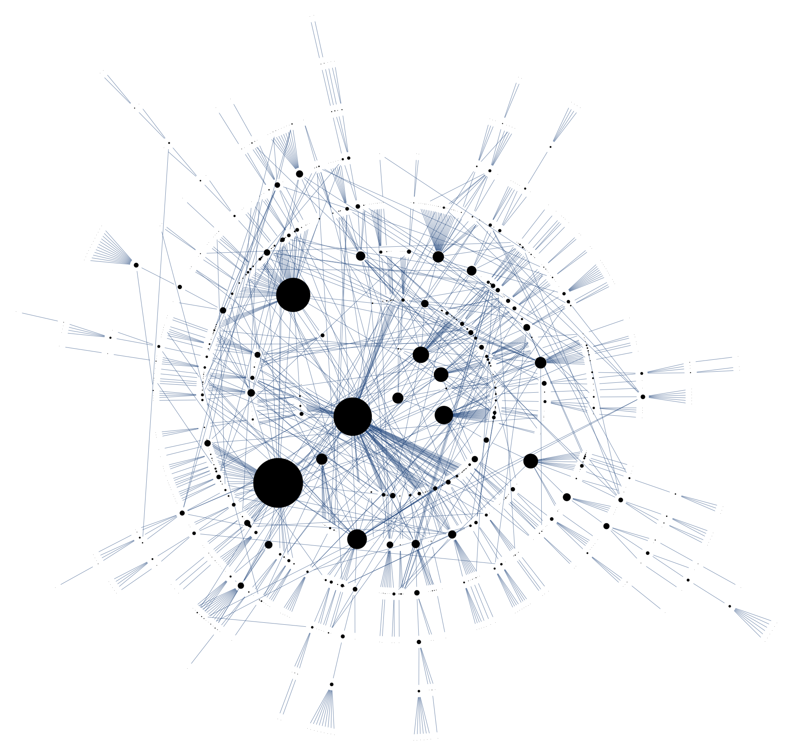

  <div class="container">
      <div class="row">
          <h1>Twitter Network Parser</h1>
          <hr>
          <h2>Introduction</h2>
            <p>
              An important part of our project is to obtain and analyse information about social networks so that we can simulate epidemics upon them.
            </p>
          <h2>Description</h2>
            <p></P>
            
            
          <h2>Our Findings So Far</h2>
            <p>
              Although we are currently getting good results with our parsing algorithm, we face two main challenges as of now.
              The first one is that twitter limits the number of queries we can perform in any given time, so it takes time for the script to obtain large networks.
              The second one is that we need as much geographical information on the users as possible; and, despite twitter allowing users to share this information, not many users do it.
              To overcome these limitations we are looking into using other social networks as a source of information of virtual human interactions that could provide information on real-world ones.
            </p>
          <h2>Other Information</h2>
          Our twitter parser follows the ideas presented in: <i>Dredze, M., Paul, M. J., Bergsma, S., & Tran, H. (2013). Carmen: A Twitter Geolocation System with Applications to Public Health.</i>
          <br><br><br>
      </div>
  </div>
</div>
